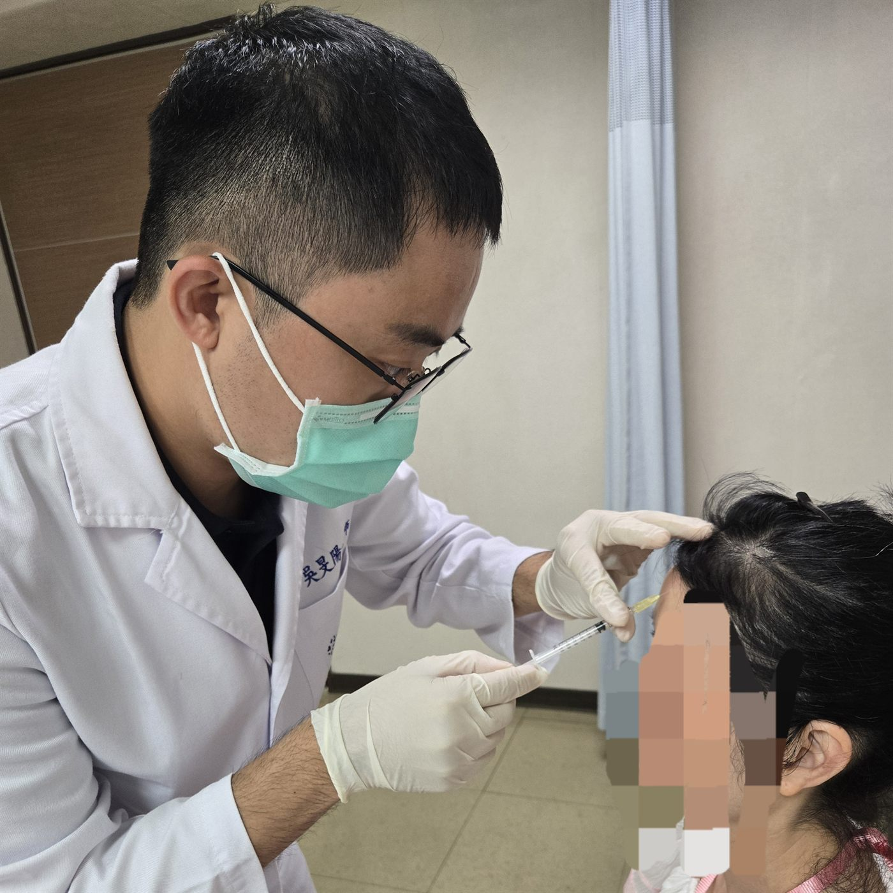

為什麼叫「頭痛之外」

門診叫號進來，坐下，第一句話常常是「醫師，我頭很痛」。
這是神經內科最常見的開場白，也幾乎是最不精確的一句。頭痛可以是偏頭痛，可以是頸因性的，可以是睡眠不足、藥物過度使用、血壓、情緒，也可以是某些需要立刻處理的狀況。同樣四個字，背後可以是完全不同的故事。
而更多時候，真正佔掉診間時間的，是頭痛「之外」的東西。
之外是什麼
是病人講到一半忽然說「其實我最近手會抖」。
是家屬在門邊補一句「他最近記性變很差」。
是那些不會出現在主訴欄，卻決定了後續怎麼走的細節：睡得好不好、有沒有在吃止痛藥、上一次這樣是什麼時候、家裡還有誰。
神經內科的診斷很大一部分是靠問出來的。影像和檢查會給答案，但要先知道該問什麼、該檢查什麼。而那個「知道」，通常來自主訴以外的地方。
這裡會寫什麼
這個部落格想寫的就是那些「之外」：
- 症狀背後的機轉，用不需要醫學背景也能讀懂的方式
- 門診裡反覆被問到、但三分鐘講不完的問題
- 一些關於怎麼描述自己身體狀況的建議 —— 講得準，診斷會快很多
- 偶爾一些臨床上的觀察與反省
不會寫的是：針對特定個人的診斷或治療建議。文章能提供的是理解的框架，不是處方。真正的判斷需要坐下來、問完、檢查完才能給。
給讀到這裡的你
如果你正因為某個症狀而焦慮，在網路上找答案 —— 我完全理解那種心情。但也想提醒一句：搜尋引擎最擅長的是把最罕見、最嚇人的可能性排在前面。
看完覺得有幫助，那很好。看完更擔心了，那就掛個號，讓人好好幫你看一次。